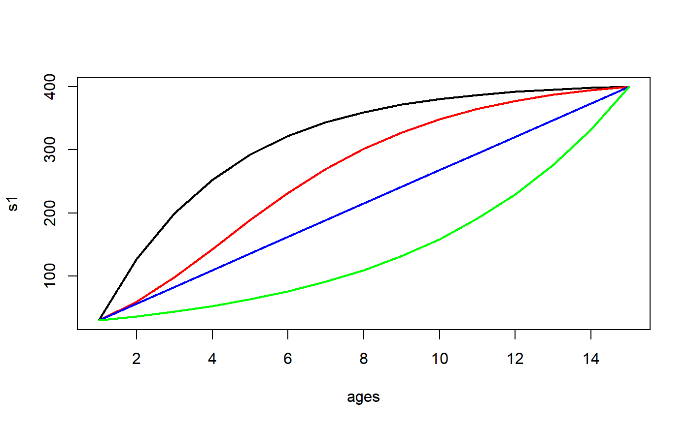

The four-parameter growth function from Schnute (1981).
Schnute( t, case = 1, t1 = NULL, t3 = NULL, L1 = NULL, L3 = NULL, a = NULL, b = NULL )
| t | A numeric vector of ages over which to model growth. |
|---|---|
| case | A string that indicates the case of the Schnute growth function to use. |
| t1 | The (young) age that corresponds to |
| t3 | The (old) age that corresponds to |
| L1 | The mean size/length at |
| L3 | The mean size/length at |
| a | A dimensionless parameter that is related to the time/age at the inflection point. |
| b | A dimensionless parameter that is related to size/length at the inflection point. |
Schnute returns a predicted size given the case of the function and the provided parameter values.
None specifically, but 12-Individual Growth is related.
Schnute, J. 1981. A versatile growth model with statistical stable parameters. Canadian Journal of Fisheries and Aquatic Sciences 38:1128-1140.
See vbFuns, GompertzFuns, RichardsFuns, logisticFuns, and SchnuteRichards for similar functionality for other models.
#> expression(E(L[t]) == bgroup("[", L[1]^{ #> b #> } + (L[3]^{ #> b #> } - L[1]^{ #> b #> }) * ~frac(1 - e^{ #> -a * (~t ~ -~t[1]) #> }, 1 - e^{ #> -a * (~t[3] ~ -~t[1]) #> }), "]")^{ #> ~frac(1, b) #> })#> expression(E(L[t]) == L[1] * e^{ #> log ~ bgroup("(", frac(L[3], L[1]), ")") * ~frac(1 - e^{ #> -a * (~t ~ -~t[1]) #> }, 1 - e^{ #> -a * (~t[3] ~ -~t[1]) #> }) #> })#> expression(E(L[t]) == bgroup("[", L[1]^{ #> b #> } + (L[3]^{ #> b #> } - L[1]^{ #> b #> }) * ~frac(~t ~ -~t[1], ~t[3] ~ -~t[1]), "]")^{ #> ~frac(1, b) #> })#> expression(E(L[t]) == L[1] * e^{ #> log ~ bgroup("(", frac(L[3], L[1]), ")") * ~frac(~t ~ -~t[1], #> ~t[3] ~ -~t[1]) #> })## Simple examples ages <- 1:15 s1 <- Schnute(ages,case=1,t1=1,t3=15,L1=30,L3=400,a=0.3,b=1) s2 <- Schnute(ages,case=2,t1=1,t3=15,L1=30,L3=400,a=0.3,b=1) s3 <- Schnute(ages,case=3,t1=1,t3=15,L1=30,L3=400,a=0.3,b=1) s4 <- Schnute(ages,case=4,t1=1,t3=15,L1=30,L3=400,a=0.3,b=1) plot(s1~ages,type="l",lwd=2)